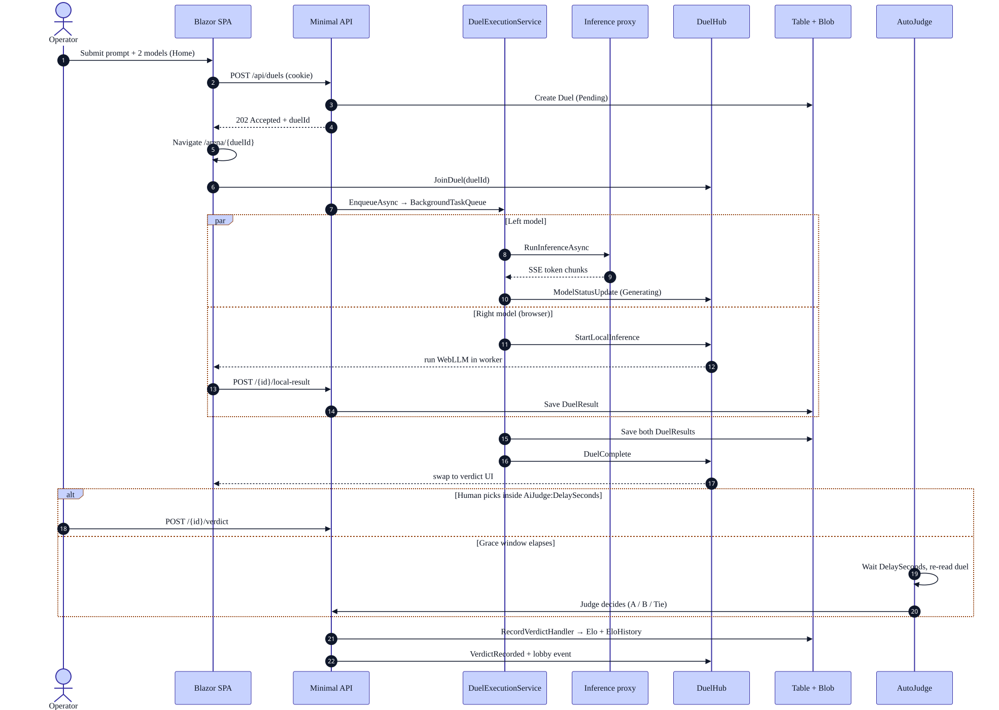
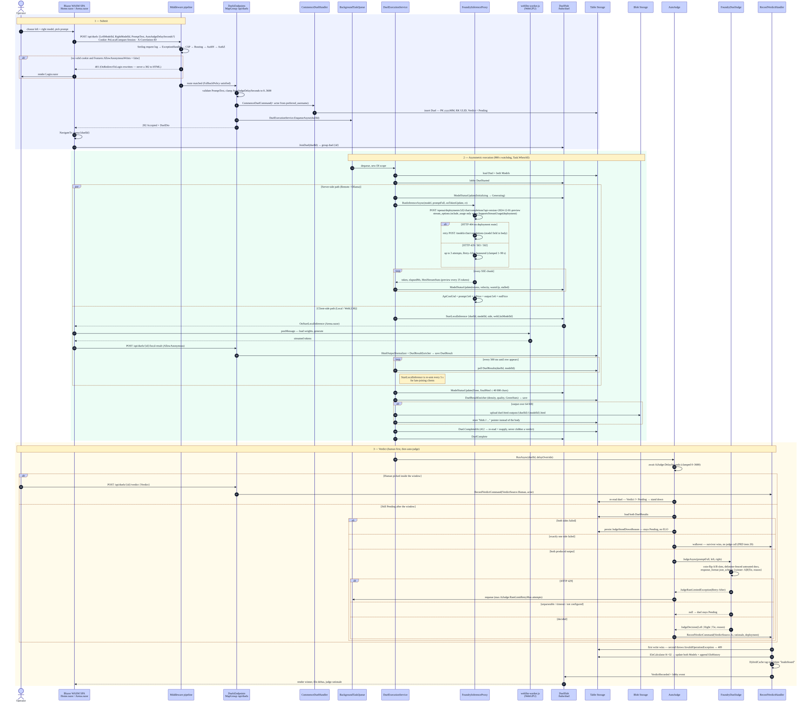

Tier 1 — Very basic
read in 30 secondsOllama · Archive · Diagnostics

c4_components_t1.mmdIn one breath
Pages call endpoints. Endpoints call handlers. Handlers write to storage and talk to models. Everything else is detail.
The one twist worth remembering: half a duel can run inside your browser, so the server is not always the thing doing the work.

erd_t1.mmdFour nouns
A model fights in a duel. Each duel has exactly two outputs and ends with one verdict. Every verdict appends to a rating history so the leaderboard can show a trend, not just a number.
Tier 2 — Basic overview
primary components and flows① Component map

c4_components_t2.mmdFour blocks, one rule
- Client Razor pages and the services they lean on. Thin by policy.
- Shared The pure logic — diff, HTML analysis, prompts, demo planner. The only client-facing code the Unit tests can reach, which is exactly why it exists.
- Api / Features Six vertical slices. Endpoint, handlers, entity and repository all sit flat in one folder.
- Api / Common Genuinely cross-slice code only — inference, domain scoring, persistence helpers, background queue, caching, telemetry.
② Key sequences

payload_lifecycle_t2.mmdSubmit → race → judge
- Submit The POST returns
202 Acceptedimmediately; nothing has run yet. - Join The SPA navigates to the Arena and subscribes to the duel's SignalR group before work begins.
- Race Both sides run under one
Task.WhenAll. Cloud models stream through the server; browser models are told to start and then polled for. - Judge A human pick inside the grace window always wins; otherwise the AI judge decides.

duel_state_t2.mmdState, not status
Pending has two meanings that used to be indistinguishable: "nobody has judged this" and "the judge could not decide". The second now carries a persisted reason.
A tie is a decision. It banks a duel and a draw for both models and moves no rating. Expired and a stood-down Pending move nothing either — rating never moves on no evidence.
A one-sided failure is also a decision. The survivor takes a walkover and its rating moves, with no judge call at all. Only a duel where both sides failed banks nothing.
③ Data model

erd_t2.mmdWhy the keys look like that
- Models live in one constant partition — the catalog is tiny and always read whole.
- Duels partition by
yyyyMM, so archive paging walks months backwards. - DuelResults partition by duel id, so both sides come back in one query.
- EloHistory uses an inverted-tick row key, so "most recent 20" is just "first 20".
Tier 3 — Complete
full diagrams and step-by-step narrativeC4 Level 2 — Containers

architecture_flow.mmdC4 Level 3 — Components

c4_components.mmdEnd-to-end request sequence

payload_lifecycle.mmdAI service routing and fallback

ai_services.mmdAuthorization map

authz.mmdEntity relationships and state

erd.mmd
duel_state.mmd④ How it fits together — step by step
-
One process answers everything
There is no separate front-end server.
PoLocalCompare.Apiserves the Blazor WebAssembly bundle from its ownwwwroot, so the SPA and the API share an origin. That is why the codebase contains no CORS policy at all — there is no cross-origin to configure.Program.cs — UseBlazorFrameworkFiles / MapFallbackToFile
-
Static files are served before authentication, on purpose
Authorization is deny-by-default. If the WASM runtime were behind that gate, an anonymous visitor would get a 401 for the very bundle that contains the login screen — an unrecoverable loop. So
UseStaticFilessits aboveUseAuthentication, and/_frameworkadditionally getsno-cache, must-revalidateso a redeploy lands immediately instead of leaving a cached boot manifest pointing at assemblies that no longer exist.Program.cs:342–355
-
Submitting a duel returns before any work happens
The endpoint validates, writes a
Pendingduel row, hands a closure toBackgroundTaskQueueand returns202 Acceptedwith the duel id. The SPA navigates to the Arena and joins the SignalR groupduel:{id}— which is why it never misses the first status frame.DuelsEndpoints.cs:29 · Arena.razor
-
The orchestrator picks a strategy per side
DuelExecutionServiceresolves a keyedIRemoteInferenceProxy—"Remote"for Foundry,"LocalService"for Ollama — and runs both sides under oneTask.WhenAllguarded by a 900-second watchdog. Browser models get no proxy at all; they get a hub message.DuelExecutionService.cs:73–108
-
Server-side inference streams straight through
The Foundry proxy opens an SSE stream and, on every chunk, calls back with a token count, elapsed time and a live scan of the partial HTML — tag count, open-tag depth, style-rule count, a repetition score, and every 25 tokens a bounded preview. Each callback becomes a
ModelStatusUpdatehub frame.FoundryInferenceProxy.cs · SseChatStreamReader.cs · HtmlStreamCounters.cs
-
Browser-side inference inverts the direction
The server pushes
StartLocalInferenceand then polls storage every 500 ms for a row it does not create. The Arena page receives the push, drivesWebLlmService, and posts the finished HTML to/api/duels/{id}/local-result— an anonymous endpoint, because a Web Worker carries no credential. The push repeats every 5 s so a client that joined late still gets it.DuelExecutionService.cs:240–297 · webllm-worker.js
-
Results are enriched before they are stored, never after
DuelResultEnricherapplies one shared policy to both paths: character density, the persisted quality score, and — for models that run on hardware you own — energy in watt-hours and its cost. Outputs above 64 KB go to Blob Storage and the table row keeps ablob://pointer.DuelResultEnricher.cs · DuelResultRepository.cs:26
-
The finished document rides out with
DoneDuelCompleteonly fires once both sides are in. Without the final HTML attached to the per-sideDoneframe, a model that crossed the line first would sit showing its last mid-stream preview — truncated about 25 tokens short of the ending, or blank if it never emitted one.DuelExecutionService.cs:224–231
-
Two judges race, and the human always wins
The auto-judge waits out the grace window, then re-reads the duel and stands down on anything but
Pending. The verdict handler independently throws on a second write. Neither mechanism alone would be enough; together they make the race safe from both ends.AutoJudge.cs:462 · RecordVerdictHandler.cs
-
The judge is built to refuse
Both models failed, the reply was unparseable, the endpoint stayed rate-limited past its retry budget, Foundry is not configured — every one of these leaves the duel
Pendingwith a persisted reason rather than guessing. Exactly one side failing is the exception: the survivor takes a walkover, because one usable output is evidence about the model that produced it. Position bias is countered by assigning the outputs to slots A and B on a coin flip, and the two documents are fenced with a per-call random hex delimiter and named as untrusted data in the system prompt.AutoJudge.cs:566–599 · FoundryDuelJudge.cs
-
Exactly one code path moves a rating
RecordVerdictHandleris it — for humans and for the AI judge alike. That is why every verdict carries aVerdictSource: two different signals feed one column, and without the discriminator the leaderboard would blend them irreversibly. The same handler appends twoEloHistoryrows, invalidates the leaderboard cache tag and raises the lobby event, so the activity feed is complete by construction.RecordVerdictHandler.cs
-
Presentational scoring is deliberately separate from persisted scoring
The Arena's scorecard computes
OutputAnalysis.CompletenessScorein the browser; the storedOutputQualityScoreis computed server-side at enrichment time. Keeping them apart means tightening a display heuristic can never retroactively change a duel that has already been recorded.Shared/Analysis/OutputAnalysis.cs vs Common/Domain/HtmlOutputQualityScorer.cs
-
The preview is sandboxed, and what it injects never escapes
Outputs render in an iframe with
sandbox="allow-scripts"and noallow-same-origin, backed by aframe-ancestors 'self'response header. The runtime probe injects a reporter<script>into that preview only — the raw output is what gets persisted, analysed, diffed, exported and judged, so nothing a person evaluates contains it.SandboxedViewport.razor · Program.cs:329
-
Concurrency is handled by re-reading, not by locking
Creates swallow 409. Updates are
If-Matchconditional. On 412 the duel writer re-reads and reapplies only the field it owns, so a completion timestamp can never clobber a verdict that landed mid-inference. The seeder's price back-fill simply defers to the next startup.StorageConcurrency.cs · TableETag.cs
-
The catalog is spread across three files that must agree
ModelSeeder.csis the list, but it only seeds into an empty table — on a machine that has already run it reconciles instead, adding missing entries and back-filling null prices. Every browser model additionally needs a matchingprebuiltAppConfigentry inweb-llm.js, andSCRIPTS/plan-webllm-artifacts.pyexits non-zero when the two disagree.ModelSeeder.cs · wwwroot/js/web-llm.js
webllm-worker.js without bumping the ?v=N cache-buster serves the old worker and your change appears to do nothing. Adding a Features/ folder without registering its namespace in GlobalUsings.cs produces "type not found" errors in files you did not touch. And E2EUI never runs in CI, so UI markup changes go stale without anything failing.